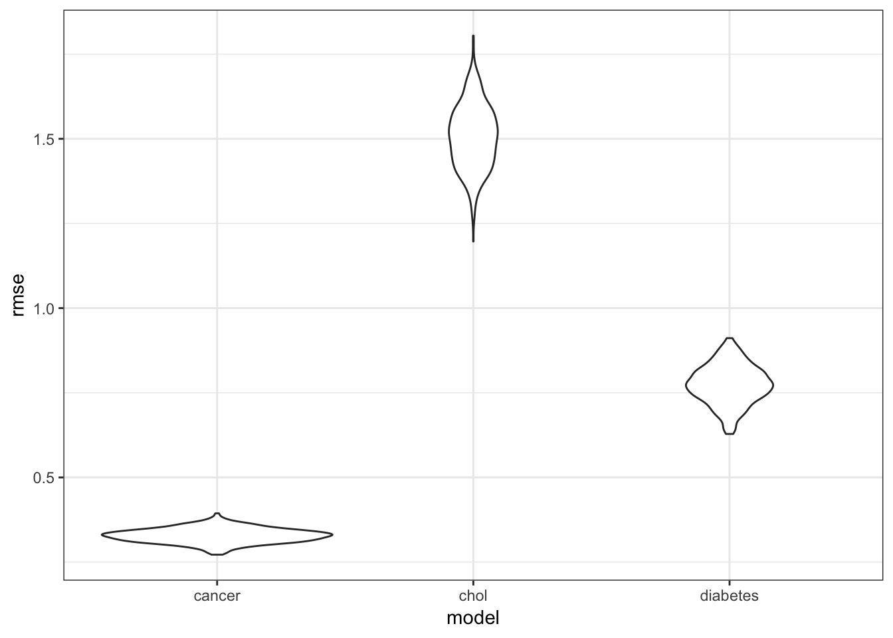

In this section, we will explore some linear models predicting health outcomes from commonly used health practices.
cdc_df = read_csv("./data/cdc_df.csv")In this dataset, the variables related to commonly used health practices are:
COREM_AdjPrev: the prevalence of men 65 years or older who are up to date on flu shots, PPV shots, and colorectal cancer screenings;
COREW_AdjPrev: the prevalence of women 65 years or older who are up to date on flu shots, PPV shots, colorectal cancer screenings, and mammograms;
DENTAL_AdjPrev: the prevalence of visits to dental clinics for adults 18 years and older;
LPA_AdjPrev: the prevalence of no leisure time physical activity for adults 18 years and older;
MAMMOUSE_AdjPrev: the prevalence of mammograph use for women aged 50-74;
PAPTEST_AdjPrev: the prevalence of pap smear use for women aged 21-65;
CHECKUP_AdjPrev: the prevalence of routine doctor visits in the past year for adults 18 and older;
CHOLSCREEN_AdjPrev: the prevalence of cholesterol screening for adults 18 and older;
COLON_SCREEN_AdjPrev: the prevalence of fecal occult blood test, sigmoidoscopy, or colonoscopy for adults 50-75.
For each of the models we will show, we first fit a model on disease prevalences with all of the aforementioned practices as predictors, and eliminated predictors until all were significant.
For the prevalence of cancer (excluding skin cancer) for adults 18 and older, the following model was the result:
summary(cancer_minus_4)##
## Call:
## lm(formula = CANCER_AdjPrev ~ COREM_AdjPrev + DENTAL_AdjPrev +
## MAMMOUSE_AdjPrev + CHECKUP_AdjPrev + COLON_SCREEN_AdjPrev,
## data = cdc_df)
##
## Residuals:
## Min 1Q Median 3Q Max
## -1.03868 -0.20284 0.01556 0.22721 0.86591
##
## Coefficients:
## Estimate Std. Error t value Pr(>|t|)
## (Intercept) 4.327473 0.322006 13.439 < 2e-16 ***
## COREM_AdjPrev 0.011737 0.004670 2.513 0.0123 *
## DENTAL_AdjPrev -0.033185 0.004160 -7.976 1.06e-14 ***
## MAMMOUSE_AdjPrev -0.036228 0.007579 -4.780 2.31e-06 ***
## CHECKUP_AdjPrev -0.009509 0.004357 -2.183 0.0295 *
## COLON_SCREEN_AdjPrev 0.106566 0.007070 15.074 < 2e-16 ***
## ---
## Signif. codes: 0 '***' 0.001 '**' 0.01 '*' 0.05 '.' 0.1 ' ' 1
##
## Residual standard error: 0.3259 on 494 degrees of freedom
## Multiple R-squared: 0.5701, Adjusted R-squared: 0.5657
## F-statistic: 131 on 5 and 494 DF, p-value: < 2.2e-16summary(chol_minus_5)##
## Call:
## lm(formula = HIGHCHOL_AdjPrev ~ DENTAL_AdjPrev + LPA_AdjPrev +
## CHECKUP_AdjPrev + COLON_SCREEN_AdjPrev, data = cdc_df)
##
## Residuals:
## Min 1Q Median 3Q Max
## -5.1079 -1.0528 -0.1173 1.0362 4.1262
##
## Coefficients:
## Estimate Std. Error t value Pr(>|t|)
## (Intercept) 26.37818 1.94070 13.592 < 2e-16 ***
## DENTAL_AdjPrev -0.06397 0.02217 -2.885 0.00409 **
## LPA_AdjPrev 0.17050 0.03430 4.971 9.18e-07 ***
## CHECKUP_AdjPrev 0.04013 0.02034 1.973 0.04901 *
## COLON_SCREEN_AdjPrev 0.06145 0.02931 2.097 0.03650 *
## ---
## Signif. codes: 0 '***' 0.001 '**' 0.01 '*' 0.05 '.' 0.1 ' ' 1
##
## Residual standard error: 1.493 on 495 degrees of freedom
## Multiple R-squared: 0.3968, Adjusted R-squared: 0.3919
## F-statistic: 81.41 on 4 and 495 DF, p-value: < 2.2e-16summary(diab_minus_3)##
## Call:
## lm(formula = DIABETES_AdjPrev ~ COREW_AdjPrev + DENTAL_AdjPrev +
## LPA_AdjPrev + MAMMOUSE_AdjPrev + CHECKUP_AdjPrev + CHOLSCREEN_AdjPrev,
## data = cdc_df)
##
## Residuals:
## Min 1Q Median 3Q Max
## -1.94594 -0.48832 -0.03568 0.38740 2.84917
##
## Coefficients:
## Estimate Std. Error t value Pr(>|t|)
## (Intercept) 9.669195 1.228864 7.868 2.29e-14 ***
## COREW_AdjPrev -0.062549 0.009354 -6.687 6.19e-11 ***
## DENTAL_AdjPrev -0.134701 0.011605 -11.607 < 2e-16 ***
## LPA_AdjPrev 0.193171 0.016159 11.954 < 2e-16 ***
## MAMMOUSE_AdjPrev 0.084542 0.014663 5.766 1.44e-08 ***
## CHECKUP_AdjPrev 0.076247 0.013194 5.779 1.33e-08 ***
## CHOLSCREEN_AdjPrev -0.074111 0.020892 -3.547 0.000426 ***
## ---
## Signif. codes: 0 '***' 0.001 '**' 0.01 '*' 0.05 '.' 0.1 ' ' 1
##
## Residual standard error: 0.7672 on 493 degrees of freedom
## Multiple R-squared: 0.9009, Adjusted R-squared: 0.8997
## F-statistic: 747.2 on 6 and 493 DF, p-value: < 2.2e-16cv_df =
crossv_mc(cdc_df, 500) %>%
mutate(train = map(train, as_tibble),
test = map(test, as_tibble))
cv_df =
cv_df %>%
mutate(cancer_minus_4 = map(train, ~lm(CANCER_AdjPrev ~ COREM_AdjPrev + DENTAL_AdjPrev + MAMMOUSE_AdjPrev + CHECKUP_AdjPrev + COLON_SCREEN_AdjPrev, data = .x)),
chol_minus_5 = map(train, ~lm(HIGHCHOL_AdjPrev ~ DENTAL_AdjPrev + LPA_AdjPrev + CHECKUP_AdjPrev + COLON_SCREEN_AdjPrev, data = .x)),
diab_minus_3 = map(train, ~lm(DIABETES_AdjPrev ~ COREW_AdjPrev + DENTAL_AdjPrev + LPA_AdjPrev + MAMMOUSE_AdjPrev + CHECKUP_AdjPrev + CHOLSCREEN_AdjPrev, data = .x))) %>%
mutate(rmse_cancer = map2_dbl(cancer_minus_4, test, ~rmse(model = .x, data = .y)),
rmse_chol = map2_dbl(chol_minus_5, test, ~rmse(model = .x, data = .y)),
rmse_diabetes = map2_dbl(diab_minus_3, test, ~rmse(model = .x, data = .y)))
cv_df %>%
select(starts_with("rmse")) %>%
gather(key = model, value = rmse) %>%
mutate(model = str_replace(model, "rmse_", ""),
model = fct_inorder(model)) %>%
ggplot(aes(x = model, y = rmse)) + geom_violin()